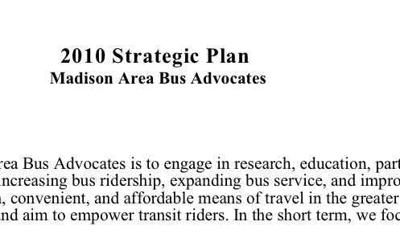
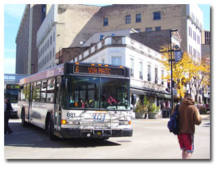

MABA Strategies
|  | 2010 Strategic Plan for Madison Area Bus AdvocatesThe Mission of Madison Area Bus Advocates is to engage in research, education, partnership, and advocacy with the goals of increasing bus ridership, expanding bus service, and improving the bus system as an efficient, clean, convenient, and affordable means of travel in the greater Madison area..... Read more |
 |
"The Metro Mover" - BRT PlanThe Madison Area Bus Advocates Bus Rapid Transit (BRT) plan consists of BRT vehicles operating over these corridors and serving these destinations. The runningway is generally on arterial streets with transit priority elements..... Read more |
|  | Suggested topics of researchPossible areas of research to help improve Metro service in Madison and beyond. Do you have more ideas? We'd love to hear from you! |